发球架拍篇
Bilibili 原课 · 叶修鸽哥 · 合集第 33/35 集 · 时长 03:17 · 整理日期 2026-11-06 · 发布日期 2026-03-16
课程总结
本课接续早期绕头练习，用投掷、预设架拍和接抛球发球建立实际发球的准备位置，最后对比两种进入架拍的顺序。
技术总结
- 用投掷建立上臂打开和向前出手的路径。
- 架拍时让持拍手来到头侧、球拍略斜，再接翻转和挥拍。
- 简化准备仍保留架拍节点，架拍高度可以适应个人动作。
- 区分早期绕头轨迹练习和实际发球的准备路线。
训练路线
- 先投掷，体会上臂位置和向后拉开的感觉。
- 预设架拍位置，先停一下确认抛球，再从该位置直接发球。
- 把简化准备接回完整动作，对比两种进入架拍的顺序。
常见问题与调整
| 情况 | 调整方式 |
|---|---|
| 架拍时掉肘或翻腕抢拍 | 回到投掷和预设架拍练习，先找到头侧的持拍位置。 |
| 刻意摆奖杯姿势后动作停住 | 缩小准备动作，保留架拍节点并接着挥出。 |
按时间顺序的课程记录
00:00—00:16：回顾早期的绕头练习
讲师说，这部分材料以前在群内讲过，但还没有做正式版本。早期发球教学提到过绕头和小臂；如果还没有相关动作习惯，可以用这种练习尝试寻找球拍的运行轨迹。接着连续展示三次局部绕头，第二次承接第一次的高位。它们是轨迹练习，没有抛球，也不是三次完整发球。
00:16—00:30：区分入门轨迹练习与实际发球
讲师随即收紧适用范围：实际发球不建议专门增加一段绕头。他认为多绕一圈会增加路程和耗时，而发球希望在较短时间内完成爆发。这是讲师对教学安排的解释，不能从所选帧直接测出动作耗时与球速之间的关系。此段以口头讲解为主，没有另立动作图。
00:30—00:54：先解决投掷能力
讲师把发球与投掷联系起来，认为应先具有基本的投掷动作；如果不会投掷，反过来靠学习网球发球补投掷基础，在他的教学逻辑中顺序不合适。
他建议先让教练帮助纠正投掷，再处理发球动作，并表达了投掷改善后发球会容易一些的判断。这是课程观点，不是对任何学习者的效果保证。
00:54—01:05：掉肘、翻腕与刻意摆奖杯姿势
讲师现场分别做掉肘与翻腕的局部反例。前者展示抬臂后肘部与球拍下降的变化；后者主要变化在持拍手附近的拍框朝向。两种不同反例分开记录，均未完成抛球发球。
随后他说，职业球员的连续动作中可能经过一些相似位置，但不建议初学时刻意摆出他所指的奖杯姿势。这里记录他的纠错意图，不把局部反例等同于对所有职业动作的评价。
动作01：掉肘的现场反例｜局部错误示范｜00:55.000—00:56.800｜15图
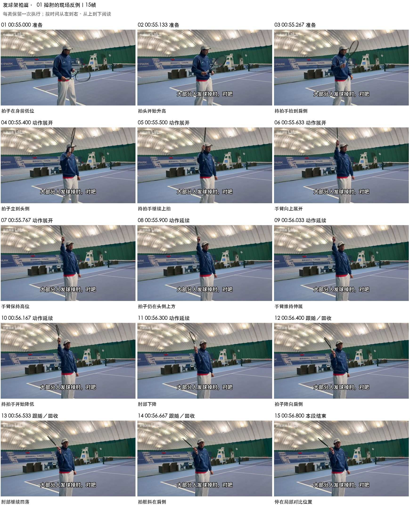
动作02：翻腕的现场反例｜局部错误示范｜00:57.500—00:59.300｜15图
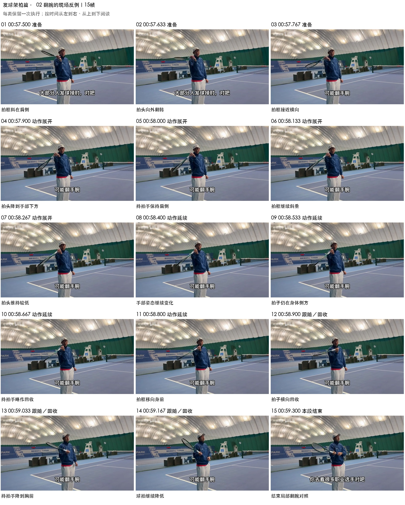
01:05—01:21：上臂位置与向后拉开的感觉
不希望持拍肘一直落在身体前面的平面中；他把这种准备与后续容易掉肘联系起来。接下来用拉弓作类比，强调上臂抬起时要向后拉开。
他说的上臂“水平”，并非把手臂横摆在胸前。他通过局部移动作对照，再把持拍臂收回并重新后拉，强调保持他所说的向后张力。图中记录手臂和球拍位置变化；是否由某一肌群主动发力、张力大小如何，画面无法独立确认。中间用手指肘部的静态说明只记文字。
动作03：拉弓式向后拉拍｜局部架拍练习｜01:10.700—01:12.500｜15图
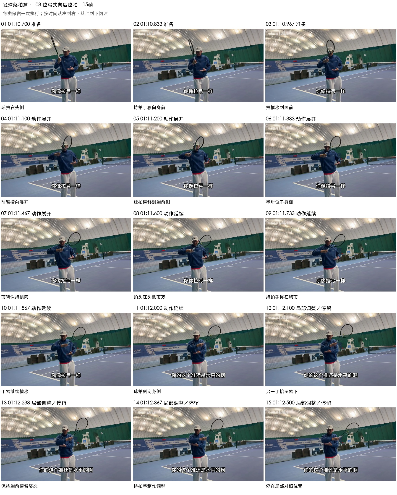
动作04：回收后再次向后拉｜局部架拍练习｜01:18.500—01:19.800｜15图
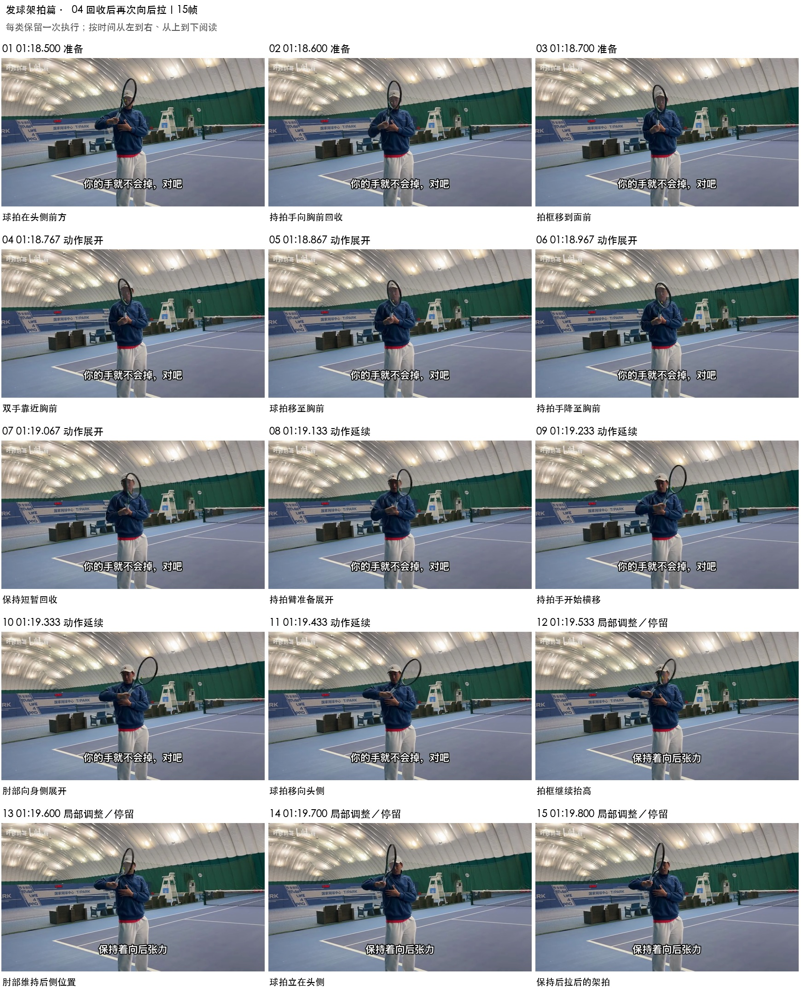
01:21—01:46：手在头侧、球拍略斜，直接翻转即可
持拍手的位置被类比成打电话：在头的外侧附近，而不是贴在头顶。讲师希望球拍略有倾斜，并用一次局部转动说明，过于竖直会多出他所说的回程。对手腕的口令是顶着，并非必须刻意扣腕。
随后他说明，从这个位置直接翻过去，已经包含需要的绕头过程，并连续做三遍局部空挥。重复动作只保留一组代表执行。约01:41之后，他另做一次把路径绕大的对比，说明不必额外加这样一圈。这一组属于现场反例，不作为推荐动作。
动作05：竖拍需要回程的局部对比｜局部对比空挥｜01:26.700—01:28.000｜15图
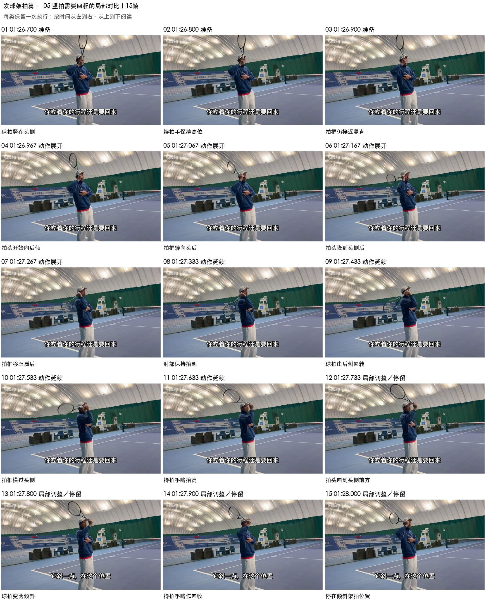
动作06：直接翻拍代表动作｜局部发球空挥｜01:38.800—01:40.000｜15图
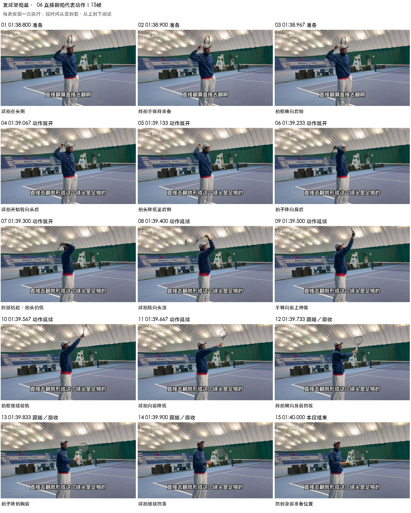
动作07：额外绕大圈的反例｜局部错误示范｜01:41.600—01:44.400｜15图
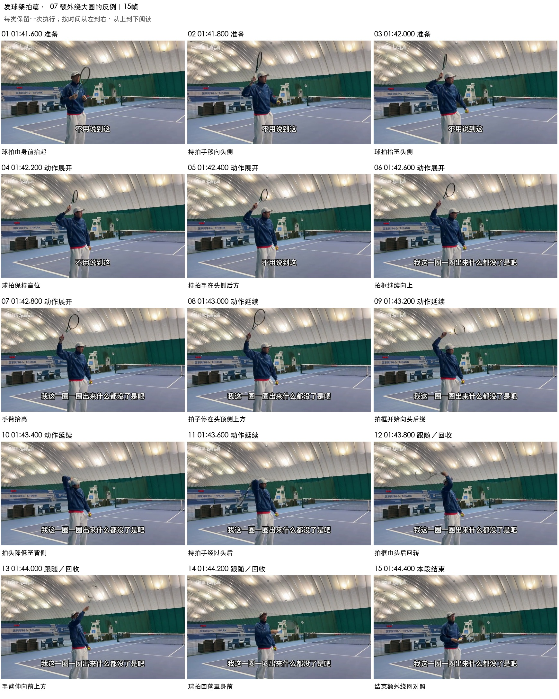
01:46—02:01：重新定位，并先做一次抛球停顿
讲师再整理位置：上臂抬起并向后，持拍手靠近耳侧。由于人的肢体长度不同，外观位置可能有差异，重点仍是他反复强调的后拉和保持。讲解中的指点手势没有被拆成挥拍。
约01:58开始，他保留头侧架拍，仅做一次抛球、停顿和抛球臂回落，球拍没有继续向前完成发球。这一段明确列作抛球局部练习，不混入下一球。
动作08：保持架拍后的一次抛球停顿｜抛球局部练习：未完成发球｜01:57.900—02:00.200｜15图
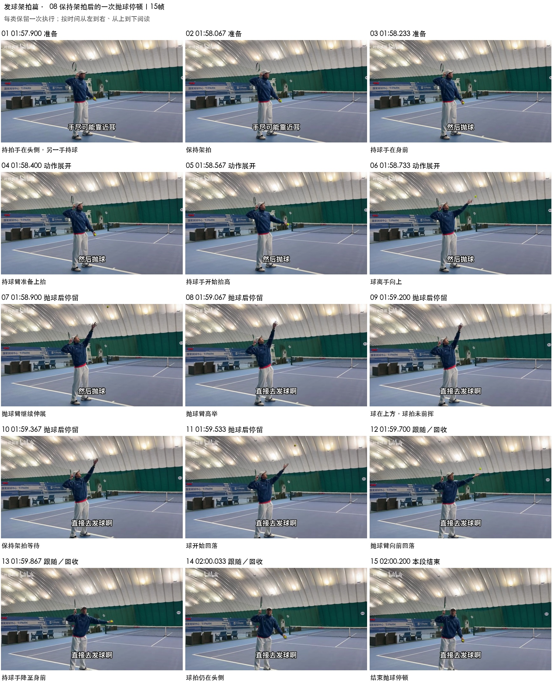
02:01—02:14：从预设架拍位置直接发球
讲师用预先架好的持拍臂开始发球，先完成一球。约02:04—02:06又停留在准备位置，用另一只手示意抛球部分，这不是另一次完整发球。接着分别完成第二球与第三球。
他用“稳”“卡住”等口令形容准备状态，并说这种准备可以衔接侧旋或平击。这里记录的是他对架拍适用性的说明，不把画面中某一球标成已核实的侧旋或平击，也不根据静帧判定精确触球时刻。
动作09：预先架拍后的代表动作｜简化发球示范｜02:07.000—02:09.300｜15图
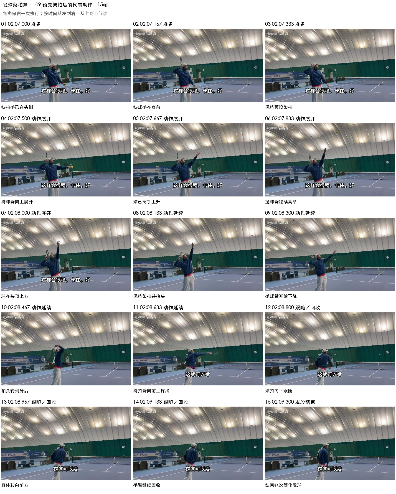
02:14—02:34：切镜后的补充，简化准备也可以练
约02:14.25画面切换，示范服装由蓝色上衣、浅色长裤变为红色上衣、橙色短裤。是否同一人未独立核实；每组只取切镜同侧的一次执行。
讲解继续强调，可以较长时间练从预设架拍位置开始的发球，把这里作为简化动作的起点。他认为，之前的引拍部分并不自动带来很多收益，希望消除必须有很大前置动作才能发快的印象。这些是讲师的训练取舍与判断，本片没有速度对照实验。约02:30—02:33主要是保持位置并指示肘部，没有另计动作图。
02:34—02:47：两种进入架拍的顺序
第一种是两臂同时拉开，直接去找架拍位置；现场完整展示一遍进入与回收。第二种是先把持拍肘向后顶住，再把持拍手和另一只手抬起来。他先做两次短的向后顶肘练习，各自回收，再完成一次“先顶肘、后抬拍”的分段动作。
重复的短后拉与分段练习各保留一次。这些都是无球的准备动作练习，不能因为进入了发球准备姿态就计为实际发球。
动作10：同时拉开的代表动作｜架拍分段练习｜02:37.300—02:39.500｜15图
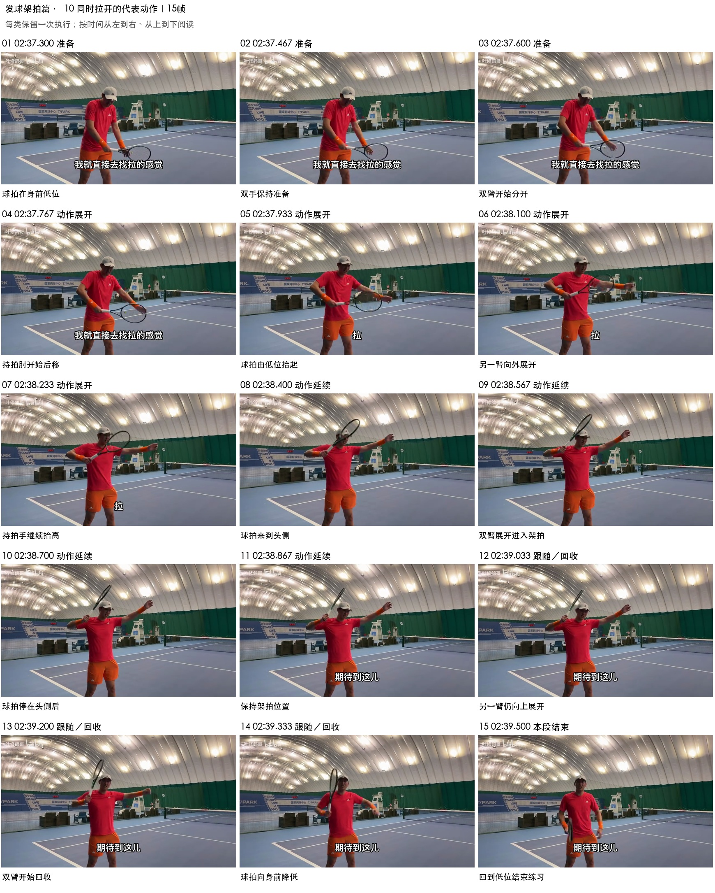
动作11：先向后顶肘的短练习｜架拍局部练习｜02:41.100—02:42.300｜15图
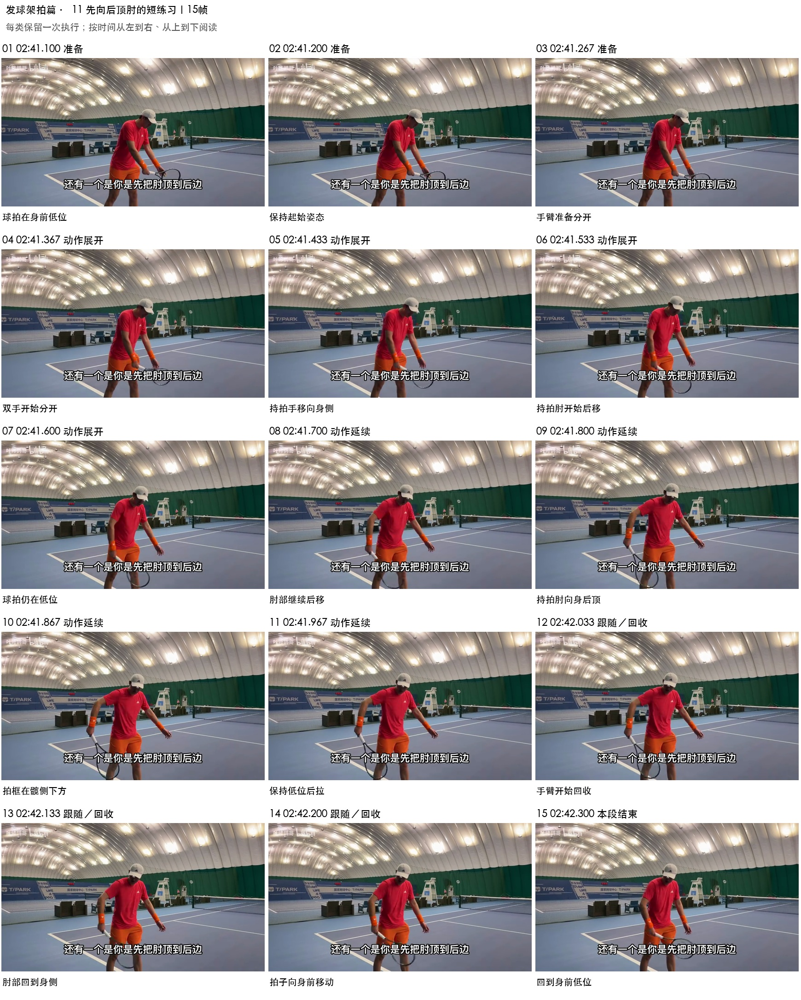
动作12：先顶肘再抬拍的完整分段｜架拍分段练习｜02:44.000—02:45.800｜15图
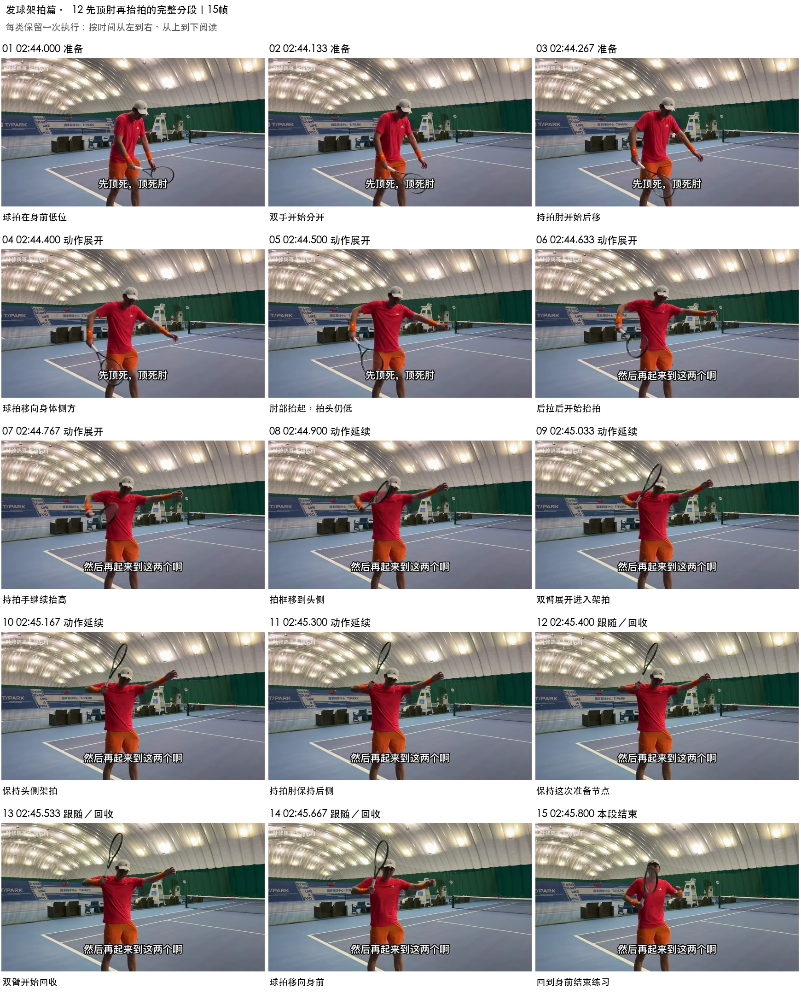
02:47—03:08：重复比较，并允许架拍高度有差异
讲师再次展示两臂同时拉开，回收后又做一次接续到前挥的无球发球空挥。随后转回先拉肘的方式：先做一遍短后拉，再做一遍后拉后抬到头侧，并停留在架拍位置。
接下来他进入架拍后改变手臂高度，说明这个节点不必在画面上完全一致；又从身前进入一个相对低些的位置，略作调整后回收。他提到职业选手也可能出现更低的外观位置，这只是讲师的类比，本片没有插入职业选手素材供核实。两段同类调整只保留一次较低位置的代表执行，不把停留本身称为一球。
动作13：接续架拍到前挥的一遍｜无球发球空挥｜02:50.600—02:52.800｜15图
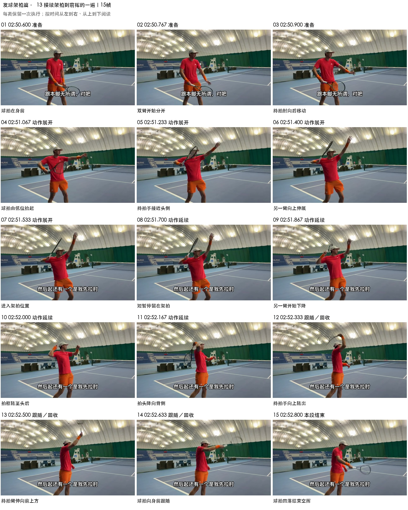
动作14：较低架拍位置的局部对照｜局部架拍调整｜03:02.500—03:06.700｜15图
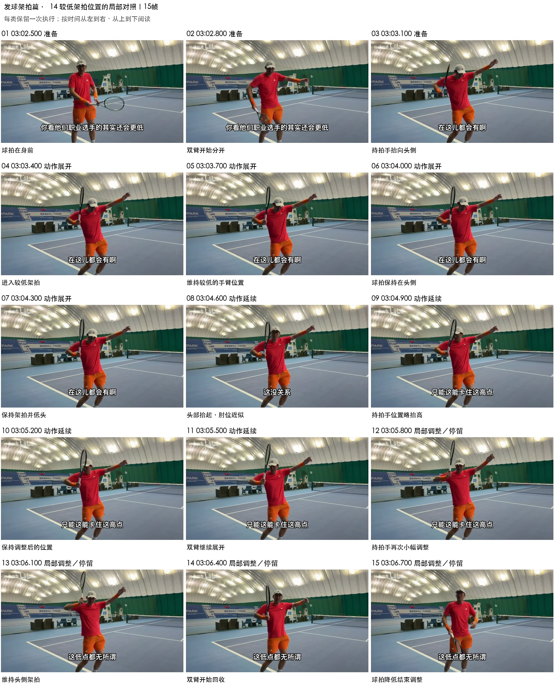
03:08—03:17：保留准备节点，结尾再做绕头反例
结尾强调，主要是能进入并保持这个准备节点，再从这里开始。他完成最后一次无球发球空挥，随后又连续做两圈额外绕头作为不推荐的对照。这两圈与前面绕大圈反例同类，去重后不再另配图。
最后回到口头收尾，约03:16结束。课程没有展示学员训练后的变化。